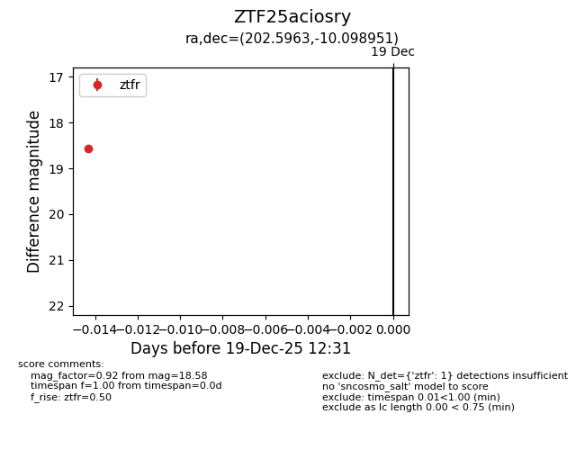
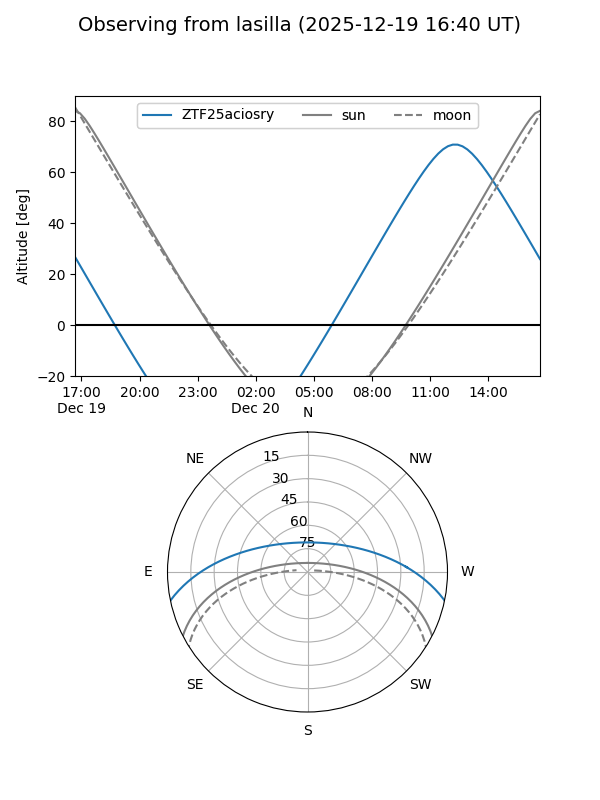
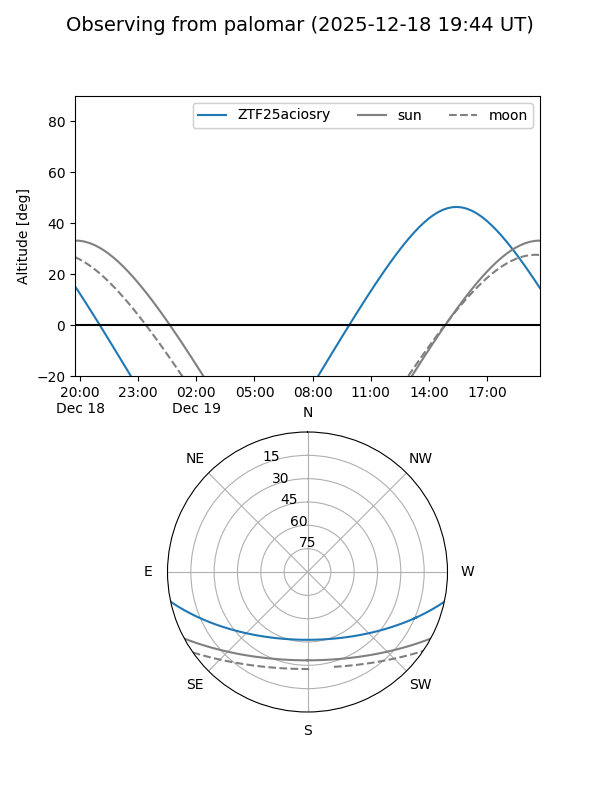

ZTF25aciosry
Target ZTF25aciosry at 2025-12-19 12:33
Aliases and brokers:
FINK: fink-portal.org/ZTF25aciosry
Lasair: lasair-ztf.lsst.ac.uk/objects/ZTF25aciosry
ALeRCE: alerce.online/object/ZTF25aciosry
alt names
ZTF25aciosry (ztf,fink_ztf)
Coordinates:
equatorial (ra, dec) = 202.5963,-10.09895
equatorial (HMS+DMS) = 13:30:23.11,-10:05:56.22
galactic (l, b) = (318.4782,+51.59333)
Flags:
Photometry:
last ztfr=18.58
1 ztfr detections
Lightcurve

Visibility


Additional plots